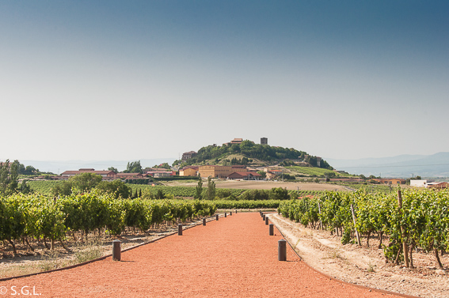
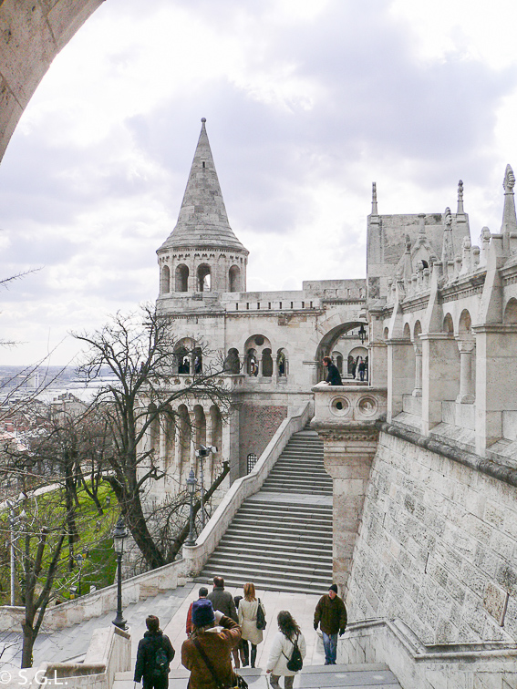
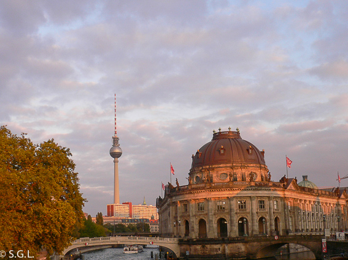
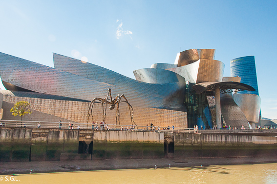

Nördlingen es una ciudad situada en el estado alemán de Baviera a unos 145 Km de Munich. Una bonita
ciudad de aire medieval, murallas y con una iglesia gótica. A pesar de que esto ya le hace merecedora de una visita,
no es lo que le hace especial. ¿Conoce la curiosa ciudad alemana de Nördlingen?
Vista aérea del cráter y la ciudad dentro - ROGER W
Hace 15 millones de años cayó un meteorito creando un cráter de 25 kilómetros de diámetro. El impacto
generó tal energía que sometió al lecho rocoso a una temperatura y presión tan grande que las burbujas de carbono de su
interior se convirtieron en diamantes. Millones de diamantes aprisionados entre las rocas del lugar. Lo único, que son
diamantes muy pequeños, casi imperceptibles al ojo humano, de menos de 0,2 mm.
Todas estas rocas fueron utilizadas para la construcción de las casas del pueblo original, así como para la construcción
de la iglesia, así que este hecho hacen de Nördlingen una curiosa ciudad sin igual en el mundo, con
todas sus paredes llenas de piedras preciosas.
Digo yo, que gracias a Dios los diamantes son tan pequeños que casi no tienen valor, porque seguramente, la ciudad
hubiera sido arrasada a lo largo de los años.
La curiosa ciudad alemana de Nördlingen. Fotografía de Wikipedia
Durante muchos años se pensó que la ciudad estaba construida sobre el cráter de un volcán, pero luego los expertos
descubrieron que el agujero fue el resultado del impacto de un meteorito. Una ciudad que se convirtió en especial hace
millones de años cuando se produjo el brutal impacto del meteorito. Y ahora ya ¿Conoces la curiosa ciudad
alemana de Nördlingen?
La Semana Santa es una de las mejores épocas para viajar ya que, al menos yo, siempre dispongo de 4 ó
5 días para hacer una escapada. Al no ser muchos días no es el mejor momento para hacer un viaje largo, son más idóneas
escapadas a lugares pequeños o que se visiten en unos poco días. Es un buen momento para desconectar, disfrutar y descansar
del ajetreo diario. Así que hoy os traigo una propuesta para Semana Santa, 5 ideas molonas para viajar.
1. SICILIA
Mi propuesta empieza en la Isla de Sicilia. Es cierto que para visitar la isla al completo es recomendable disponer de más
días, pero para un primer contacto, es una escapada que recomiendo. Además, la temperatura en Semana Santa es más llevadera
que en verano, porque visitar Sicilia en verano es para personas a las que les gusta el calor, porque hace calor y mucho.
Para unos pocos días se puede visitar Palermo, Cefalú o Taormina. O una combinación de ellos. Pero si quieres saber con más
detalle que ver en esta isla del mediterráneo, no te pierdas este recorrido por Sicilia.
2. LA RIOJA ALAVESA
Cambiamos completamente de tercio y nos quedamos en el norte de la península. En la Rioja alavesa sí que se respira tranquilidad.
Un destino ideal para descansar y huir de las grandes ciudades. Naturaleza, pequeños pueblos de aire medieval, turismo familiar,
buen comer y sobre todo, buen beber. La Rioja alavesa es el destino ideal para gourmets, senderistas, adultos, niños y cualquiera
que quiera disfrutar de esta preciosa zona vitivinícola. Y si te apetece pasar la Semana Santa con tu grupo de amigos puede que
la información que doy en excursión a la Rioja alavesa en autobús, te pueda venir de perlas.

Laguardia. La Rioja alavesa
3. PRAGA, VIENA Y BUDAPEST
Para los más urbanitas y europeos os traigo esta propuesta y la siguiente. Una de las rutas más clásicas y bonitas de Europa central
es la que recorre las 3 ciudades imperiales por excelencia, Praga, Viena y Budapest. A cada cual más bonita que la anterior. Si te
gusta ver las ciudades con más tranquilidad y no quieres andar de la ceca a la meca en pocos días, otra opción es visitar cualquiera
de las ciudades exclusivamente. Cualquiera de ellas merece una visita. Pero si te anima a hacer el circuito completo no te pierdas
mi post de Praga, Viena y Budapest. Recorrido por las ciudades imperiales.

Budapest
4. BERLÍN
Berlín es mi otra propuesta urbana y cosmopolita para la Semana Santa, 5 ideas molonas para viajar. Una ciudad con mucha historia
reciente, relacionada con la segunda guerra mundial y el muro de Berlín. Pero también una ciudad con maravillosos museos, como
uno de mis preferidos, el Museo de Pérgamo. En mi post sobre Berlín en 4 días, encontrarás los lugares más importantes para visitar,
tips y consejos para tu viaje a la capital alemana.

Berlín
5. BILBAO
Y para finalizar, en mi propuesta de Semana Santa, 5 ideas molonas para viajar, no podía faltar mi ciudad preferida del mundo, Bilbao.
Es una época perfecta para visitarla ya que es el tiempo ideal para conocerla bien, disfrutar del museo Guggenheim, de sus pintxos
e incluso de hacer alguna escapada a lugares tan bonitos como San Juan de Gastelugatxe, muy conocida ahora por la serie juego de tronos.

Bilbao
Y hasta aquí mis 5 ideas molonas para viajar en Semana Santa. Si no te convence ninguna y necesitas más inspiración, prueba a leer
alguna de mis otras recomendaciones para viajar en Semana Santa. ¡Qué no te quedes sin viajar por no saber a donde ir!